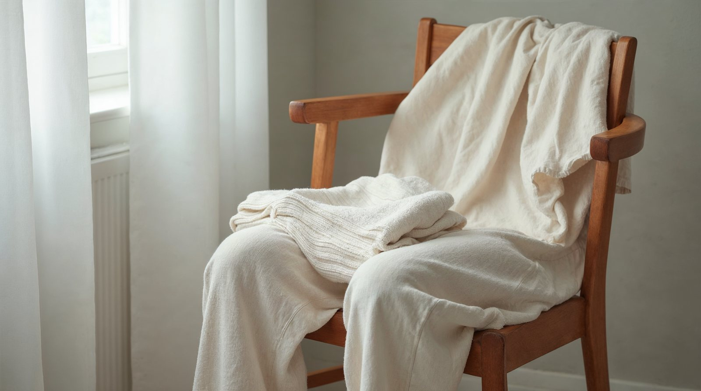

이종호 한의사 감수좋은꿈참사랑한의원 대표원장 (한의사 면허번호 19769)발행 2026-11-22 · 수정 2026-11-27
이 글의 차례
- 한의원에서 보는 초음파는 어떤 검사인가요
- 왜 말과 손만으로는 헷갈릴 때가 있을까요
- 한의원에서 함께 살필 수 있는 경우
- 초음파로 볼 수 없는 것도 있습니다
- MRI나 X선과는 무엇이 다른가요
- 실제로 받으면 어떤 느낌인가요
- 아프지 않은 쪽도 함께 보는 이유
- 검사 결과를 들으실 때 알아 두시면 좋은 것
- 시간과 부담이 걱정되시는 분께
- 초음파 유도 약침, 그리고 시술 전에 알려 주실 것
- 오시기 전에 준비해 주시면 좋은 것
- 진맥과 초음파, 그리고 다른 진료와의 연결
- 첫 방문은 이렇게 진행됩니다
- 진료 사이에 집에서 해 주실 일
- 이런 증상은 먼저 확인이 필요합니다
- 마치며
- 함께 읽으면 좋은 글
어깨가 몇 달째 아파서 밤에 돌아눕다가 깨고, 낮에는 선반 위 물건을 꺼내려다 '악' 소리를 냅니다. 주변에서는 "그거 오십견 아냐?", "힘줄 끊어진 거 아니야?" 한마디씩 하죠. 듣다 보면 점점 겁이 나고요. 도대체 안에서 무슨 일이 일어나고 있는지, 눈으로 한번 보면 속이 시원하겠다 싶으실 거예요.
진료실에서 이런 말씀을 자주 들어요. "원장님, 이거 찍어 봐야 알 수 있는 거 아니에요?" "한의원에서도 초음파를 봐요?" 네, 저희는 필요할 때 초음파를 봐요. 그런데 초음파를 본다고 모든 답이 화면에 나오는 건 아니에요.
그러니까 사실은 '화면에 보이는 것'과 '지금 아픈 이유'는 다른 얘기예요. 오래된 자개장을 떠올려 보세요. 겉에 흠집이 몇 군데 있어도 문 여닫는 데는 아무 문제가 없잖아요. 몸도 비슷해서, 화면에 흔적이 보여도 통증과는 상관없는 경우가 있고, 반대로 화면이 깨끗한데 아픈 경우도 있거든요.
이 글에서는 제가 언제 초음파를 쓰고, 무엇을 보고, 무엇은 볼 수 없는지 진료실에서 말씀드리는 그대로 솔직하게 적어 볼게요.
한의원에서 보는 초음파는 어떤 검사인가요
초음파는 사람 귀에 들리지 않는 높은 소리를 몸에 보내고, 되돌아오는 신호로 몸 안을 그려 내는 방법입니다. 방사선을 쓰지 않고, 몸 안을 실시간 영상으로 볼 수 있다는 점이 특징입니다. 근골격계 초음파로는 근육, 힘줄, 인대 같은 연부조직의 상태를 살펴볼 수 있습니다.
실시간이라는 점이 저는 특히 좋습니다. 사진 한 장을 찍고 끝나는 게 아니라, 환자분이 팔을 들거나 손목을 움직이실 때 힘줄이 어떻게 미끄러지는지를 화면으로 함께 볼 수 있으니까요. 아픈 자리를 손가락으로 짚어 주시면 바로 그 아래에 탐촉자를 대고 확인할 수도 있습니다.
제가 근골격계 초음파를 따로 공부한 것도 그래서입니다. 손으로 만져서 짐작한 것과 실제 안의 모습이 얼마나 맞는지, 저 스스로 확인하고 싶었습니다. 지금 이 몸에서 무슨 일이 일어나고 있는지 조금 더 정확하게 이해하고 싶은 마음, 그게 전부입니다.
왜 말과 손만으로는 헷갈릴 때가 있을까요
같은 자리가 아파도 원인은 여러 갈래일 수 있습니다. 힘줄이 붓거나 두꺼워져 움직일 때마다 아픈 경우가 있고, 근육이 뭉치거나 늘어나 특정 동작에서만 아픈 경우도 있습니다. 관절 주변의 물주머니(활액낭)나 물혹이 부어 눌리는 경우, 오래 반복한 동작으로 힘줄이 붙는 자리에 부담이 쌓인 경우도 있지요.
이런 것들은 겉에서 만져 보면 비슷하게 느껴질 때가 많습니다. 제 손끝이 '여기 뭔가 있다'고 말해도, 그게 힘줄인지 그 위의 물주머니인지 구분이 애매할 때가 있습니다. 그럴 때 화면으로 직접 보면, 어느 부위를 중심으로 살필지 정하는 데 참고가 됩니다.
한의원에서 함께 살필 수 있는 경우
초음파는 오시는 모든 분께 하는 검사가 아닙니다. 이야기와 진찰을 먼저 하고, 눈으로 확인할 필요가 있다고 판단될 때만 씁니다. 초음파를 함께 보는 건 대략 이런 경우입니다.
- 어깨, 무릎, 발목, 손목처럼 힘줄·인대·근육이 관련된 통증이 있을 때
- 부기나 뭉침이 있어 그 부위를 눈으로 확인할 필요가 있을 때
- 치료 방법을 정하기 전에 어느 부위를 중심으로 볼지 확인하고 싶을 때
- 약침을 놓을 자리의 깊이와 주변 구조를 확인해야 할 때
예를 들어 팔을 들 때 어깨가 걸리고 밤에 쑤시는 분이라면, 어떤 높이에서 아픈지 먼저 확인한 뒤 필요하면 힘줄 상태를 함께 봅니다. 아침 첫걸음에 발뒤꿈치가 아픈 분이라면 눌러서 아픈 자리를 찾고 발바닥 근막 주변을 확인합니다. 다른 병원에서 MRI를 찍고 오신 분이라면 그 결과지를 먼저 함께 보고, 초음파가 더 필요한지를 판단합니다.
초음파를 보지 않는 날도 많습니다. 이야기를 듣고 손으로 살펴서 충분히 판단이 된다면 굳이 화면을 켜지 않습니다. 검사는 필요한 만큼만 하는 것이 맞다고 생각하기 때문입니다.
반대로 지난번에는 보지 않았는데, 같은 동작에서 반응이 기대와 다르거나 새로운 증상이 생겼다면 그때 보자고 말씀드리기도 합니다. 초음파를 언제 쓸지도 진료가 이어지면서 함께 정해 가는 셈입니다.
초음파로 볼 수 없는 것도 있습니다
이 부분은 꼭 솔직하게 말씀드리고 싶습니다. 초음파로 모든 걸 알 수는 없습니다. 뼈 내부, 몸 깊은 곳의 구조, 신경계 질환 같은 것은 초음파로 평가하기 어렵습니다. 그런 부분이 의심되면 저는 다른 검사를 권해 드립니다.
한의원에서 보는 초음파는 근육과 힘줄 같은 근골격 상태를 진료에 참고하려는 것입니다. 영상의학과 판독이나 병원의 정밀 검사를 대신하지 않습니다.
그리고 화면에 무언가가 보인다고 해서 그게 곧 통증의 원인이라고 단정하지 않습니다. 나이가 들면 아프지 않은 분의 힘줄에서도 변화가 보일 때가 있거든요. 반대로 화면이 깨끗한데도 분명히 아프신 분도 계십니다.
그럴 때 "영상에는 아무것도 없네요" 하고 끝내 버리면, 아픈 분 입장에서는 얼마나 서운하시겠습니까. 영상에서 뚜렷하게 보이지 않아도 통증은 있을 수 있습니다. 그래서 저는 영상과 진찰, 그리고 환자분의 이야기를 늘 함께 놓고 봅니다.
MRI나 X선과는 무엇이 다른가요
이 질문도 자주 받습니다. X선은 주로 뼈를 보는 데 쓰이고, MRI는 뼈 안쪽이나 몸 깊은 곳의 구조까지 자세히 볼 수 있는 검사입니다. 초음파는 그에 비해 볼 수 있는 깊이와 범위에 한계가 있습니다. 대신 방사선 없이, 진료실에서 바로, 움직이는 모습을 실시간으로 볼 수 있다는 점이 다릅니다.
그래서 저는 이 검사들을 서로 대신하는 것으로 보지 않습니다. 초음파로 충분히 살필 수 있는 부위가 있고, 처음부터 MRI나 X선이 필요한 상황이 있습니다.
넘어진 뒤 뼈가 걱정되거나, 저림과 힘 빠짐이 함께 있어 신경 쪽이 의심되거나, 깊은 구조를 봐야 할 때는 영상 검사가 가능한 의료기관에서 먼저 확인받으시라고 말씀드립니다. 이미 찍은 결과가 있으면 그 결과를 존중하고, 거기에 초음파와 진찰을 더해 함께 봅니다.

실제로 받으면 어떤 느낌인가요
검사할 부위를 드러내고 누우시거나 앉으시면, 그 자리에 투명한 젤을 바릅니다. 처음 닿을 때 차가워서 움찔하시는 분이 많습니다. 미리 말씀드리고 바르겠습니다. 그 위에 탐촉자라는 작은 기구를 대고 천천히 움직이며 화면을 봅니다.
초음파 자체는 바늘처럼 찌르는 검사가 아닙니다. 다만 아픈 자리를 확인하려고 탐촉자로 살짝 누를 때 그 부위가 예민하면 불편할 수 있습니다. 불편하시면 바로 말씀해 주세요. 누르는 힘을 줄이겠습니다. 때로는 팔을 천천히 들어 보시라거나 손목을 돌려 보시라고 부탁드리는데, 아픈 범위 안에서 무리하지 않으셔도 됩니다.
저는 화면을 환자분도 보실 수 있게 돌려 드리고, 지금 어느 부위에서 무엇을 보고 있는지 쉬운 말로 설명해 드리려고 합니다. 흑백 화면이라 처음엔 뭐가 뭔지 잘 안 보이실 겁니다. 그래도 "여기 이 줄처럼 보이는 게 힘줄이에요" 하고 짚어 드리면 고개를 끄덕이시곤 합니다. 막연히 두렵던 몸 안이 조금은 덜 낯설어지는 순간입니다.
아프지 않은 쪽도 함께 보는 이유
어깨가 오른쪽만 아프다고 하셨는데 제가 왼쪽에도 젤을 바르면 의아해하시는 분이 계십니다. 아프지 않은 쪽을 같이 보면 그분에게 원래 어떤 모습이 자연스러운지 가늠하는 데 도움이 되기 때문입니다. 힘줄의 두께나 결은 사람마다 조금씩 다르니까요.
양쪽을 나란히 놓고 보면, 아픈 쪽에서 보이는 모습이 정말 다른 건지, 아니면 그분에게는 원래 그런 건지 조금 더 차분하게 판단할 수 있습니다. 화면만 보고 성급하게 이름을 붙이지 않으려는 제 나름의 습관입니다.
검사 결과를 들으실 때 알아 두시면 좋은 것
초음파를 보고 나면 "힘줄이 조금 두꺼워 보여요", "물주머니 쪽에 물이 약간 차 보여요" 같은 말씀을 드릴 때가 있습니다. 이런 말을 들으면 덜컥 겁부터 나시지요. 그런데 이 표현들은 지금 화면에서 보이는 모습을 설명하는 말이지, 그것만으로 앞으로 어떻게 될지를 정하는 말은 아닙니다.
제가 결과를 말씀드릴 때 함께 드리려고 하는 이야기는 세 가지입니다. 화면에서 무엇이 보였는지, 그게 지금 불편하신 동작과 어떻게 이어져 보이는지, 그래서 오늘 무엇을 하고 다음에 무엇을 다시 확인할지. 이 세 가지가 연결되지 않은 채 화면 설명만 남는다면, 제 설명이 아직 덜 된 것입니다.
혹시 설명을 듣고도 잘 모르겠다면 다시 물어봐 주세요. 같은 말을 두 번, 세 번 여쭤보셔도 괜찮습니다. 내 몸에 대한 이야기는 알아들을 때까지 들으셔도 됩니다. 궁금한 게 집에 가서 떠오르면 적어 두셨다가 다음에 오셔서 물어보셔도 좋습니다.
시간과 부담이 걱정되시는 분께
초음파까지 보면 진료가 오래 걸리지 않느냐고 걱정하시는 분도 계십니다. 초음파는 매번 하는 검사가 아니고, 이야기와 진찰로 충분히 판단이 되면 하지 않습니다. 필요할 때도 아픈 자리를 중심으로 보기 때문에, 진료 시간이 크게 늘어나는 일은 드뭅니다.
다른 병원에서 이미 검사를 받으셨다면 그 결과지를 가져와 주세요. 같은 걸 다시 보는 대신, 그 결과와 지금 진찰을 함께 놓고 정말 더 확인할 게 있는지부터 판단하겠습니다. 바쁜 시간을 쪼개 오신 걸 알기에, 꼭 필요한 것만 하려고 합니다.
초음파 유도 약침, 그리고 시술 전에 알려 주실 것
약침은 진료 판단에 따라 약침액을 특정 부위에 주입하는 치료입니다. 초음파를 보면서 시술하면 목표 조직과 주변 구조의 위치를 확인하는 데 도움이 됩니다. 그렇다고 모든 약침에 초음파가 필요한 건 아니고, 부위의 깊이와 구조에 따라 사용 여부를 정합니다.
약침을 하게 된다면, 시술 전에 아래 내용을 꼭 알려 주세요.
- 약물이나 음식 알레르기
- 복용 중인 약, 특히 혈액을 묽게 하는 약
- 당뇨, 간·신장 질환 같은 기저질환
- 임신 가능성
약침 뒤에는 시술 부위가 뻐근하거나 멍이 들 수 있고, 드물게 감염이나 알레르기 반응이 생길 수 있습니다. 시술 전에 설명해 드리고, 시술 뒤 부위가 붓고 열이 나거나 두드러기가 생기면 기다리지 말고 바로 연락하거나 병원 진료를 받으세요. 숨이 차거나 어지러움이 함께 오면 가까운 응급실로 바로 가세요.
오시기 전에 준비해 주시면 좋은 것
초음파를 볼 가능성이 있는 부위라면 걷어 올리거나 드러내기 쉬운 옷을 입고 오시면 편합니다. 어깨라면 단추가 있는 셔츠나 품이 넉넉한 윗옷, 무릎이나 발목이라면 걷어 올리기 쉬운 바지가 좋습니다. 젤은 검사 뒤 닦아 드리지만, 아끼는 옷이라면 조금 신경 쓰이실 수 있으니까요.
그리고 아픈 동작 하나를 떠올려 오세요. 화면은 아픈 자리를 비추지만, 어디를 비출지 정하는 건 결국 환자분이 "이럴 때 여기가 아파요" 하고 알려 주시는 말씀입니다. 그 말씀이 구체적일수록 제가 볼 자리도 분명해집니다.
걱정되는 점, 예를 들어 "주변에서 힘줄이 끊어진 거라던데요" 같은 말을 들으셨다면 그것도 그대로 말씀해 주세요. 확인할 수 있는 것과 없는 것을 구분해서 설명해 드리겠습니다.
진맥과 초음파, 그리고 다른 진료와의 연결
초음파를 보러 왔는데 왜 손목부터 짚느냐고 물으시는 분도 계십니다. 저는 오시는 분 모두 맥을 짚고, 혀를 보고, 말씀을 듣고, 손으로 몸을 살핀 뒤, 필요할 때 초음파로 근육과 힘줄을 확인합니다. 전통적인 진찰과 현대적인 평가를 함께 쓰는 이유는 하나입니다. 지금 이 몸을 조금 더 정확하게 이해하고 싶어서입니다.
화면에 보이는 건 아픈 자리 한 곳입니다. 그런데 그 자리가 왜 이렇게 오래 회복되지 않는지는 화면 밖에 답이 있을 때가 있습니다. 잠을 설친 날이 이어지는지, 요즘 많이 지치셨는지, 같은 동작을 하루에 몇 번이나 하시는지. 진맥과 대화가 그 빈 곳을 채워 줍니다.
초음파로 확인한 뒤에는 침, 약침, 추나, 체외충격파 가운데 오늘 상태에 맞는 방법을 고릅니다. 예를 들어 체외충격파를 하기 전에 힘줄과 주변 조직을 먼저 살펴 치료 부위를 정하는 식입니다. 무엇을 왜 하는지는 그때그때 말씀드리겠습니다.
첫 방문은 이렇게 진행됩니다
처음 오시면 어느 동작에서 가장 불편한지, 언제부터 아팠는지, 다친 일은 없었는지 여쭙니다. 붓거나 뜨겁거나 멍든 곳이 있는지, 이전에 받은 영상 검사나 주사 치료가 있는지도 확인합니다. 그다음 맥을 짚고 손으로 진찰한 뒤, 눈으로 확인할 필요가 있다고 판단되면 그때 초음파를 봅니다.
다른 병원에서 받은 X선·MRI 결과지나 판독지가 있으면 휴대폰 사진으로라도 챙겨 와 주세요. 그 자료가 있으면 같은 걸 반복해서 확인하지 않고, 필요한 부분만 더 볼 수 있습니다. 비용과 건강보험 적용 여부는 방문 전 전화로 확인해 주세요.
다음 진료 때는 같은 동작으로 변화를 확인하고, 필요하다고 판단되면 같은 자리를 다시 봅니다. 처음 본 영상과 달라진 점이 궁금하시면 지난번 이야기와 함께 이어서 보겠습니다.
진료 사이에 집에서 해 주실 일
아픈 동작을 무리해서 반복하지 마시고, 어떤 동작이 아픈지만 기억해 두세요. 붓고 열감이 있으면 찬 수건을 잠깐 대고 그 부위를 쉬게 해 주세요. 그리고 아픈 동작과 아픈 시간대, 그러니까 아침인지, 일한 뒤인지, 밤인지를 짧게 적어 두시면 다음 진료에서 큰 도움이 됩니다.
1~2주 정도 적어 보시면, 막연히 '계속 아프다'고 느끼던 것에도 흐름이 보일 때가 있습니다. 통증이 시작된 무렵 무슨 일이 있었는지, 운동을 시작했는지, 이사를 했는지, 넘어진 적은 없는지도 함께 떠올려 적어 주세요. 그런 이야기는 화면에는 절대 나오지 않지만, 저에게는 화면만큼 소중한 정보입니다.
이런 증상은 먼저 확인이 필요합니다
- 넘어지거나 부딪힌 뒤 체중을 싣지 못하거나 모양이 달라진 경우(골절 여부부터 확인)
- 붓고 붉으며 열이 함께 나는 경우
이런 신호가 있으면 한의원보다 가까운 병원이나 응급실을 먼저 찾으세요.
한 가지 덧붙이면, 초음파로 본 모습이 걱정스러워 보여도 혼자 인터넷을 찾아보며 밤을 새우지는 않으셨으면 합니다. 궁금한 건 언제든 다시 물어봐 주세요. 제가 아는 만큼, 확인할 수 있는 만큼 차분히 설명해 드리겠습니다.
마치며
아픈 곳이 오래가면 몸보다 마음이 먼저 지쳐요. 혹시 큰 병은 아닐까, 이러다 영영 팔을 못 드는 건 아닐까. 그런 걱정을 안고 몇 달을 지내셨을 걸 생각하면 마음이 쓰여요. 그런 걱정이 드는 건 당연한 거예요.
초음파는 그 걱정을 대신 풀어 주는 마법의 화면은 아니에요. 다만 환자분과 제가 같은 화면을 보며 얘기를 나눌 수 있는, 좋은 출발점이 될 수는 있다고 생각해요.
화면을 읽고 진찰하는 건 제가 할게요. 대신 하나만 부탁드려요. 어떤 동작이, 하루 중 언제 아팠는지만 짧게 적어 와 주세요. 그건 화면에 나오지 않는 정보라서, 저한테는 화면만큼 소중하거든요. 딴 건 편하게 지내셔도 돼요.
다음에 오시면 어느 동작이 제일 불편하셨는지부터 여쭙고, 필요하면 그 자리를 함께 들여다볼게요. 궁금한 건 그때 편하게 물어보세요.
함께 읽으면 좋은 글
- 초음파와 MRI는 어떻게 다르고 언제 병원에서 해야 하나요?
- 병원에서 찍은 MRI나 X-ray 자료를 한의원에 가져가면 어떻게 쓰이나요?
- 체외충격파는 어떤 진료이고, 어떤 통증에 어떻게 사용하나요?

한의원에서 함께 살필 것
- 어깨, 무릎, 발목, 손목처럼 힘줄·인대·근육이 관련된 통증이 있을 때
- 부기나 뭉침이 있어 그 부위를 눈으로 확인할 필요가 있을 때
- 치료 방법을 정하기 전에 어느 부위를 중심으로 볼지 확인하고 싶을 때
먼저 확인이 필요한 신호
- 넘어지거나 부딪힌 뒤 체중을 싣지 못하거나 모양이 달라진 경우(골절 여부부터 확인)
- 붓고 붉으며 열이 함께 나는 경우
자주 묻는 질문
초음파는 모든 환자가 받나요?
아니요. 이야기와 진찰을 먼저 하고, 통증 부위의 상태를 눈으로 확인할 필요가 있다고 판단될 때만 사용합니다.
몸에 해롭지 않나요?
초음파는 방사선을 쓰지 않는 검사입니다. 다만 모든 검사는 필요한 경우에 하는 것이 원칙이어서, 진찰 후 필요할 때만 합니다.
초음파에서 이상이 보이지 않으면 아프지 않은 건가요?
아니요. 영상에서 뚜렷하게 보이지 않아도 통증은 있을 수 있어, 진찰과 환자분의 이야기를 함께 봅니다.
초음파로 모든 걸 알 수 있나요?
아닙니다. 뼈 내부, 깊은 구조, 신경계 질환 등은 초음파로 평가하기 어렵고, 한의원 초음파가 영상의학과 판독이나 병원 검사를 대신하지도 않습니다. 필요하면 다른 검사를 권해 드립니다.
약침도 부작용이 있나요?
시술 부위 통증, 멍, 드물게 감염이나 알레르기 반응이 생길 수 있습니다. 시술 전 설명해 드리고, 시술 뒤 이상이 있으면 바로 연락해 주세요. 숨이 차거나 어지러우면 가까운 응급실로 가세요.
좋은꿈참사랑한의원은 재진 때 지난번 이야기부터 이어서 여쭙니다. 진료시간과 예약은 오시는 길에서 확인하세요.
어디서 상담받을 수 있나요?
좋은꿈참사랑한의원은 서울 동작구 만양로2길 2 신성빌딩 3층·5층(서울 동작구 상도동, 7호선 상도역 3번 출구 근처)에 있습니다. 한의사 3명(이종호 대표원장, 조영기 수석진료원장, 정원영 진료원장)이 진료합니다. 진료시간은 평일 09:30~20:00(점심 13:00~14:00), 토·일·공휴일 09:30~15:00이며, 방문 전 전화로 확인을 권합니다. 예약은 네이버 예약, 카카오톡 상담, 전화 02-815-7510로 받습니다.
이 글은 일반적인 건강 정보이며 개인의 진단이나 치료를 대신하지 않습니다. 증상이 있거나 복용 중인 약이 있다면 진료를 통해 확인하세요. 치료 효과는 개인마다 다를 수 있습니다.
작성 기준: 일반적으로 알려져 있는 건강 정보를 참고해 정리했습니다(대표원장 감수). 증상 기록은 1~2주 동안 하루 1회, 비슷한 시간에 적어 오시면 지난 상태와 비교하기 쉽습니다.